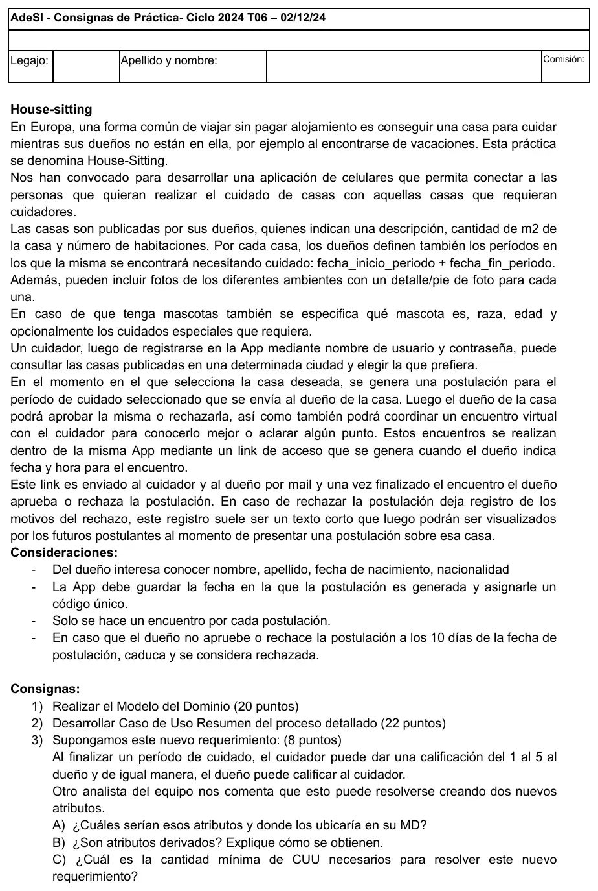

Final, 02/12/2024. House-sitting
Final, 02/12/2024
Enunciado


Propuesta de respuesta
Respuesta no verificada. La propuso Luta Studios con inteligencia artificial y ningún docente la revisó. Puede tener errores.
1. Modelo del dominio
El período de cuidado va como clase porque cada casa tiene varios y la postulación es para uno de ellos. El motivo del rechazo queda en la postulación, así lo pueden ver los próximos postulantes de esa casa. Tocá el dibujo para verlo en pantalla completa.
Estados de Postulacion.estado: pendiente, aprobada y rechazada. La caducada a los 10 días se considera rechazada.
2. Caso de uso resumen del proceso
CURS01 House-sitting
| Campo | Contenido |
|---|---|
| Dimensiones | Resumen, Sin estructurar, Sistema, Negra, Real, Semántica |
| Meta | Conseguir cuidador para la casa |
| Actor primario | Dueño |
| Otros | Cuidador |
| Precondiciones de negocio | <vacío> |
| Precondiciones de sistema | Existen Ciudades. |
| Disparador | El dueño quiere publicar una casa que necesita cuidado. |
Camino básico
- Dueño ingresa sus datos personales. Sistema registra al dueño.
- Dueño ingresa los datos de la casa, la ciudad, los períodos en que necesita cuidado y las fotos de los ambientes con su detalle. Sistema registra la casa publicada.
- Cuidador ingresa nombre de usuario y contraseña para registrarse. Sistema registra al cuidador.
- Cuidador consulta las casas publicadas en una ciudad. Sistema informa las casas con sus períodos, fotos y mascotas.
- Cuidador selecciona una casa y un período de cuidado. Sistema informa los motivos de rechazo de las postulaciones anteriores a esa casa, genera la postulación con su fecha y un código único y la envía al dueño.
- Dueño indica fecha y hora para el encuentro virtual con el cuidador. Sistema genera el link de acceso y lo envía por mail al cuidador y al dueño.
- Finalizado el encuentro, dueño aprueba la postulación. Sistema registra la postulación aprobada.
Caminos alternativos
1.a <reemplaza>El dueño ya está registrado:1.a.1Dueño se identifica. Sistema valida. Continúa en paso 2.
2.a <posterior>La casa tiene mascotas:2.a.1Dueño ingresa qué mascota es, su raza, su edad y los cuidados especiales si los requiere. Sistema registra. Continúa en paso 3.
3.a <reemplaza>El cuidador ya está registrado:3.a.1Cuidador ingresa nombre de usuario y contraseña. Sistema valida. Continúa en paso 4.3.a.1.aNombre de usuario o contraseña inválidos. Sistema informa. Fin CU.
4.a <durante>No hay casas publicadas en la ciudad:4.a.1Sistema informa la situación. Continúa en paso 4.
6.a <reemplaza>El dueño no coordina encuentro:6.a.1Continúa en paso 7.
7.a <reemplaza>Dueño rechaza la postulación:7.a.1Dueño ingresa los motivos del rechazo. Sistema registra la postulación rechazada con sus motivos. Fin CU.
6-7.aPasan 10 días desde la fecha de postulación sin que el dueño la apruebe o la rechace:6-7.a.1Sistema registra la postulación como rechazada. Fin CU.
Postcondiciones de sistema
- Éxito: Dueno, Casa, PeriodoCuidado, Foto, Cuidador, Encuentro y Postulacion aprobada están registrados.
- Fracaso: Postulacion rechazada con sus motivos está registrada (7.a). Postulacion rechazada por caducidad está registrada (6-7.a).
- Éxito alternativo: Mascota está registrada (2.a). Postulacion aprobada sin Encuentro está registrada (6.a).
Postcondiciones de negocio
- Éxito: El dueño consiguió cuidador para la casa en el período.
- Fracaso: El cuidador no pudo ingresar (3.a.1.a). El dueño rechazó al cuidador (7.a). La postulación caducó (6-7.a).
- Éxito alternativo:
<vacío>
Reglas de negocio relacionadas con el caso de uso, con el paso y el tipo
5La App guarda la fecha en que se genera la postulación y le asigna un código único (restricción)5Al presentar una postulación, el cuidador ve los motivos de rechazo anteriores de esa casa (acción disparadora)6Solo se hace un encuentro por cada postulación (restricción)6Cuando el dueño indica fecha y hora, se genera el link de acceso y se envía por mail a los dos (acción disparadora)6-7.aSi el dueño no aprueba ni rechaza la postulación a los 10 días de su fecha, caduca y se considera rechazada (inferencia)
Las postcondiciones de sistema van en forma detallada y citan el camino alternativo donde se cumplen.
3. Calificaciones
A) Atributos y dónde van. calificacionDueno[0..1] y calificacionCuidador[0..1], con valores de 1 a 5, en Postulacion. La postulación aprobada es la que une a un cuidador con un dueño en un período de cuidado, así que cada calificación queda atada a ese cuidado. Son opcionales porque solo se cargan al terminar el período.
B) ¿Son derivados? No. Los ingresa el cuidador o el dueño, no se calculan a partir de otros atributos, así que se guardan. Sí sería derivado un promedio, por ejemplo /promedioCalificacion en Cuidador, que sale del promedio de las calificaciones de sus postulaciones aprobadas.
C) Cantidad mínima de CUU. Dos: uno en el que el cuidador califica al dueño y otro en el que el dueño califica al cuidador. Cada uno es una tarea de una sola persona, en un lugar y en un tiempo corto, que es lo que define a un caso de uso de usuario.
Respuesta no verificada. Puede tener errores.
Se armó con la página del 2° parcial (modelo del dominio, composición, atributo derivado, casos de uso con su plantilla, niveles de meta y reglas de negocio). La forma del caso de uso resumen sigue el CURS01 de la resolución del final del 29/05/23.
Quedó en duda: El relato no dice cómo se registra el dueño: el paso 1 supone que carga sus datos personales. No queda claro si la cátedra espera las calificaciones en Postulacion o en una clase nueva de cuidado; con dos atributos, Postulacion es el lugar natural. En C, alguien puede defender un solo CUU con dos actores; la definición de EBP da dos. La caducidad a los 10 días se escribió como camino alternativo sobre los pasos 6 y 7, porque puede pasar en cualquiera de los dos.
¿Cómo te fue?
Marcá cada tema del examen.
- Modelo del dominioModelo del dominio, en 2° parcial
- Caso de uso resumenReestructuración de un caso de uso resumen, en 2° parcial
- RequerimientosRequerimientos, en 1° parcial